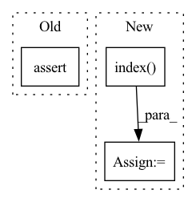

Pattern ID :23237

Before Change
act_cfg=dict(type="ReLU", inplace=True),
order=("linear", "norm", "act")):
super(LinearModule, self).__init__()
assert "linear" in order
self._in_features = in_features
self._out_features = out_features
After Change
self._bias = bias
elif self.with_norm:
_t = norm_cfg["type"] if isinstance(norm_cfg, dict) else norm_cfg
_d = self._order.index("norm") - self._order.index("linear")
self._bias = _t in NORMS.group("drop") or _d != 1
else:
self._bias = True
In pattern: SUPERPATTERN
Frequency: 3
Non-data size: 3
Instances
Fragment ID: 73388909
Project Name: yeliudev/nncore
Commit Name: 130b2f65f2ded4dc45540cfdc4c0838062f84a79
Time: 2021-11-03
Author: yeliudev@outlook.com
File Name: nncore/nn/modules/linear.py
M Class Name: LinearModule
N Class Name: LinearModule
M Method Name: __init__(7)
N Method Name: __init__(7)
M Parent Class: nn.Module
N Parent Class: nn.Module
M File Name: nncore/nn/modules/linear.py
N File Name: nncore/nn/modules/linear.py
M Start Line: 41
M End Line: 65
N Start Line: 44
N End Line: 65
'>
Before Change
order=("msg_pass", "norm", "act"),
**kwargs):
super(MsgPassModule, self).__init__()
assert "msg_pass" in order
self._in_features = in_features
self._out_features = out_features
After Change
self._bias = bias
elif self.with_norm:
_t = norm_cfg["type"] if isinstance(norm_cfg, dict) else norm_cfg
_d = self._order.index("norm") - self._order.index("msg_pass")
self._bias = _t in NORMS.group("drop") or _d != 1
else:
self._bias = True
'>
Fragment ID: 73388907
Project Name: yeliudev/nncore
Commit Name: 130b2f65f2ded4dc45540cfdc4c0838062f84a79
Time: 2021-11-03
Author: yeliudev@outlook.com
File Name: nncore/nn/modules/msg_pass.py
M Class Name: MsgPassModule
N Class Name: MsgPassModule
M Method Name: __init__(8)
N Method Name: __init__(8)
M Parent Class: nn.Module
N Parent Class: nn.Module
M File Name: nncore/nn/modules/msg_pass.py
N File Name: nncore/nn/modules/msg_pass.py
M Start Line: 47
M End Line: 76
N Start Line: 51
N End Line: 76
'>
Before Change
assert decoder_length > 0
assert encoder_length >= 0
assert data_cat[-1, -1] - self.min_prediction_idx + 1 >= decoder_length
if self.weight is None:
target = data_cont[:, -1] // remove target
After Change
// reset index
if self.time_idx in self.reals:
time_idx = self.reals.index(self.time_idx)
data_cont[:, time_idx] = torch.linspace(
data_cont[0, time_idx], data_cont[-1, time_idx], len(target), dtype=data_cont.dtype
)
'>
Fragment ID: 73388900
Project Name: jdb78/pytorch-forecasting
Commit Name: 03894c27b35a5f1f0fdd5bc7dc874bae1530515c
Time: 2020-07-17
Author: beitner.jan@bcg.com
File Name: pytorch_forecasting/data.py
M Class Name: TimeSeriesDataSet
N Class Name: TimeSeriesDataSet
M Method Name: __getitem__(2)
N Method Name: __getitem__(2)
M Parent Class: Dataset
N Parent Class: Dataset
M File Name: pytorch_forecasting/data.py
N File Name: pytorch_forecasting/data.py
M Start Line: 310
M End Line: 372
N Start Line: 335
N End Line: 393